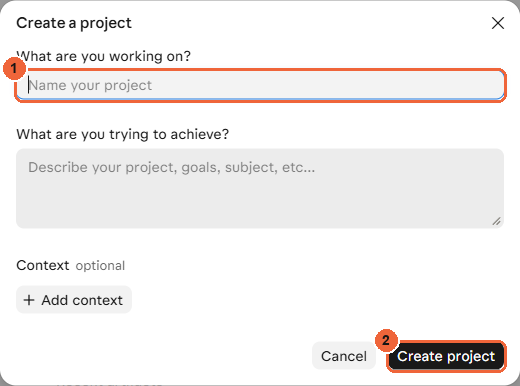
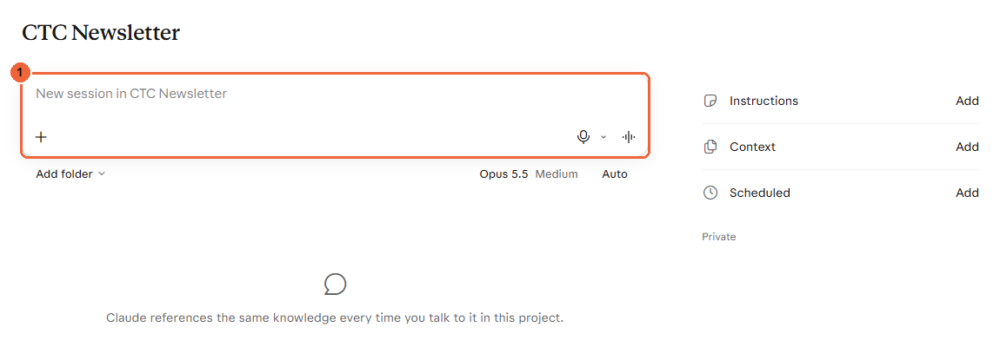

Step 2 of 4, once
What you install
One plugin and a browser extension. A paid Claude account. No code.
ctc-newsletterSets up your chapter, builds your lists, collects each week's events and builds the issue.Plugin, 6 skills
A plugin is a zip you upload once. It brings its skills with it. Chapter setup is inside ctc-newsletter now, so there is no separate setup package. Download the zip first; step 2 uploads it.
-
Turn on code execution
Open claude.ai/settings/capabilities. Make sure Cloud code execution and file creation is on. Skills need it.

Settings, then Capabilities. 1 The switch that has to be on. It usually already is. -
Upload the plugin
Open claude.ai/customize/plugins. Add, then Upload plugin, then choose the ctc-newsletter zip.

Customize, then Plugins. 1 Add. 2 Upload plugin. -
Install Claude in Chrome
Open Claude in the Chrome Web Store, then Add to Chrome. Sign in with the same account.

The one button. Each week's events are read from Luma and Eventbrite through this. -
Create a project
Open claude.ai/projects, then New project. Name it Climate Tech [your city]. Start every chapter chat inside it: Claude keeps your chapter's files there.

1 The name. 2 Create project. The other two boxes can stay empty. -
Check it worked
Open the project and type in its own box. That starts a chat inside the project, which is where everything for your chapter happens. Ask:
Verify installWhich Climate Tech Cities skills do you have available?
Claude should name six: ctc-newsletter-cycle, ctc-chapter-setup, ctc-source-map, ctc-opportunities, ctc-harvest and ctc-assemble. If not: check step 1, upload again, and start a fresh chat. Skills do not appear in a chat that was already open.
Your new project. 1 The box to type in. A chat started anywhere else cannot see your chapter's files.